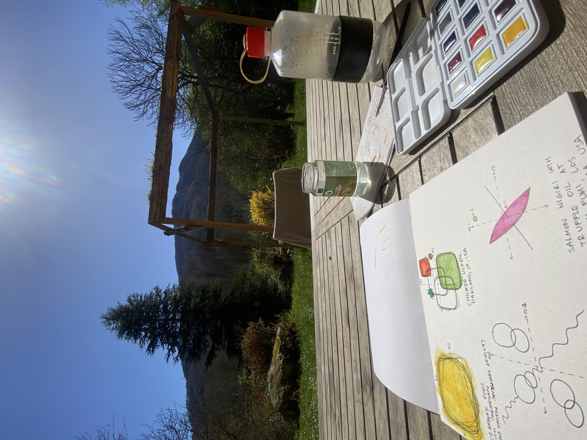

Dimensionally Reduced Flavor Plots
Pen and Watercolor on Paper
2023-4-5
These paintings are inspired by the sensory experience of eating some of my favorite foods. PC = Principal Component.



These paintings are inspired by the sensory experience of eating some of my favorite foods. PC = Principal Component.